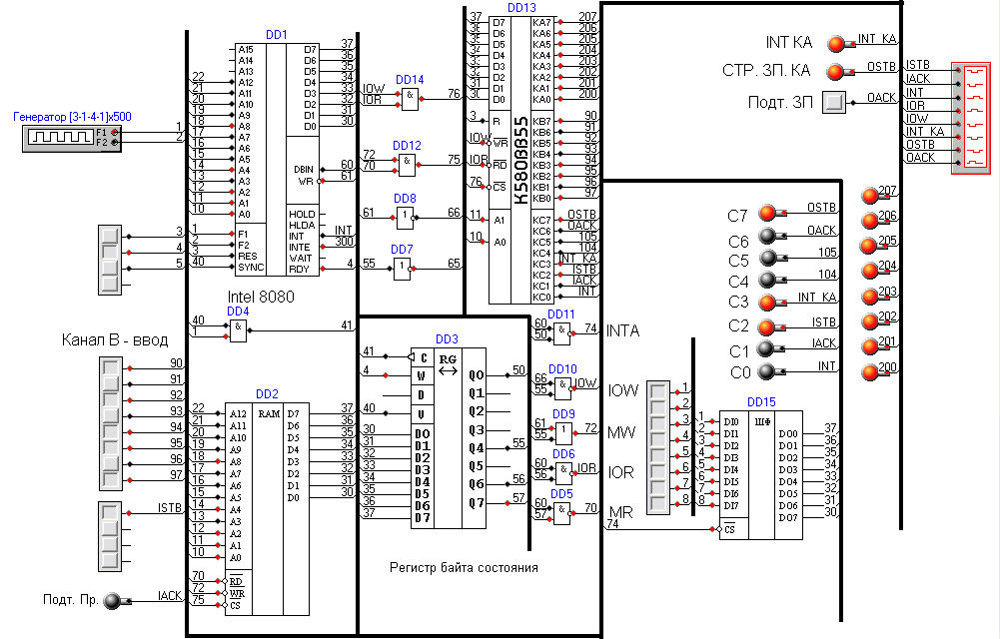
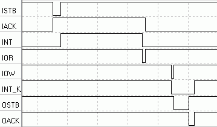

Используемая для проверки схема опять-таки содержит процессор. Системного контроллера здесь нет, а управляющие сигналы формируются с помощью обычных логических элементов.
Схема:
 Некоторые используемые на схеме элементы:В качестве внешнего устройства, с которого осуществляется ввод, используется линейка переключателей (для задания байта) и одиночный переключатель (для выработки строба приема). Роль устройства вывода играет линейка светодиодов и переключатель для выработки сигнала подтверждения приема. При приходе байта от внешнего устройства процессор получает сигнал INT с вывода КС0 ППИ, обрабатывает прерывание (вводит байт из канала B и выводит его в канал A). Вывод КС3 ППИ не подключен к процессору (хотя сигнал прерывания и генерируется, он ничем не воспринимается, кроме осциллографа и лампочки).
Программа, выполняемая процессором:
| Адрес | Мнемоника | Комментарий |
| Точка входа | ||
| 0000h | LXI SP, 1FFFCh | Установка указателя стека для правильной обработки прерываний |
| 0003h | JMP 0100h | Переход на код инициализации ППИ |
| Процедура обработки прерываний (ISR) | ||
| 0038h | PUSH PSW | Сохранение слова состояния МП в стек |
| 0039h | IN 01h | Чтение байта из порта 1 (т.е. из буфера канала B ППИ) в аккумулятор |
| 003Bh | OUT 00h | Запись байта из аккумулятора в порт 0 (т.е. в буфер канала А ППИ); |
| 003Dh | POP PSW | Восстановление слова состояния МП из стека |
| 003Eh | EI | Разрешение обработки прерываний. |
| 003Fh | RET | Возврат из ISR в точку выполнения прерванной программы |
| Код инициализации ППИ | ||
| 0100h | MVI A, 0A7h | Загрузка в аккумулятор значения управляющего слова ППИ, соответствующего следующей конфигурации: каналы А и B в режиме 1, канал B настроен на ввод, канал A – на вывод. |
| 0102h | OUT 03h | Вывод содержимого аккумулятора в порт 3 (т.е. в РУС, т.к. старший разряд байта в аккумуляторе установлен) |
| 0104h | MVI A, 04h | Загрузка в аккумулятор кода команды сброса разряда КС2 ППИ. |
| 0106h | OUT 03h | Вывод команды в порт 3 (т.е. ее выполнение интерфейсом ВВ55) |
| 0108h | MVI A, 0Ch | Загрузка в аккумулятор кода команды сброса разряда КС6 |
| 010Ah | OUT 03h | Вывод команды в порт 3 |
| 010Ch | MVI A, 05h | Загрузка в аккумулятор кода команды установки разряда КС2 в 1. В режиме 1 эта команда разрешает генерацию сигнала запроса прерывания от порта B ППИ при вводе |
| 010Eh | OUT 03h | Вывод команды в порт 3 |
| 0110h | MVI A, 0Dh | Загрузка в аккумулятор кода команды установки разряда КС6 в 1. В режиме 1 эта команда разрешает генерацию сигнала запроса прерывания от порта А ППИ при выводе |
| 0112h | OUT 03h | Вывод команды в порт 3 |
| 0114h | EI | Разрешение обработки прерываний процессором |
| 0115h | NOP | Нет операций |
| 0116h | JMP 0115h | Бесконечный цикл – во время его выполнения могут приходить и обрабатываться прерывания |
Используя осциллограф, можно наблюдать следующие временные диаграммы:
Обозначения сигналов здесь значат следующее:
В некоторый момент времени внешнее устройство хочет ввести байт данных в канал ППИ. Для этого оно устанавливает ISTB=0. ППИ обнаруживает это и считывает данные со входов КВ, помещая их в буфер канала B. По окончании считывания ППИ выставляет сигнал IACK=1, давая ВУ знать о том, что чтение завершилось, и буфер КИ занят байтом данных (т.е. этот сигнал можно трактовать как сигнал занятости). После этого ВУ может перевести ISTB обратно в уровень «1». При этом ППИ генерирует сигнал запроса прерывания INT=1, если это разрешено. Этот сигнал снимается при последующем чтении процессором байта из канала B (при переходе уровня на RD с «1» на «0»), чтобы не вызывать последующих прерываний для этого байта. При переходе уровня на RD обратно в «1» ППИ также устанавливает уровень на IACK в 0, чтобы уведомить ВУ о готовности принять очередной байт.
Выполняя ISR, процессор через некоторое время выдает байт данных в канал А, выставляя WR=0. Это приводит к сбросу (т.е. установке в «0») сигнала запроса прерывания для канала А. При переходе WR в «1» ППИ вырабатывает сигнал строба записи (здесь OSTB), который держится до тех пор, пока ВУ не выдаст сигнал подтверждения записи (OACK=0). После перехода OACK обратно в «1» выдается сигнал запроса прерывания (высокий уровень) для информирования процессора об окончании записи.